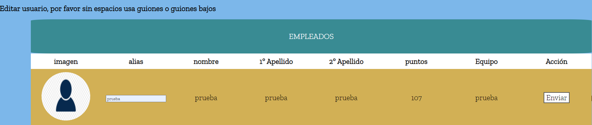

Ahora le damos a editar usuario desde la página de inicio,donde anteriormente le dimos añadir falta o quitar falta
Vemos los circulos que hay abajo pues tenemos que hacer clic en él, el que queremos editar y le damos a enviar por ejemplo si le damos a alias.
Y si ponemos un alias que este ya en los otros empleados e incluso el que ya tenía el empleado, nos dará error y no lo podremos poner
Nos saldrá este error